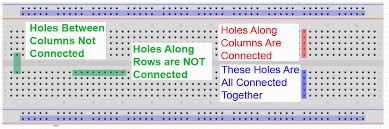
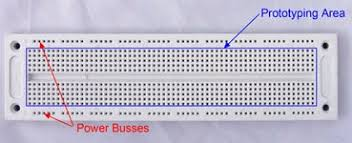
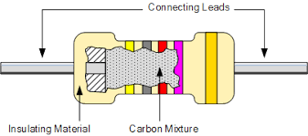
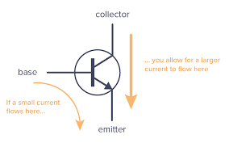
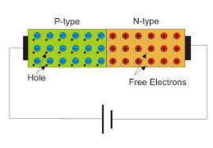
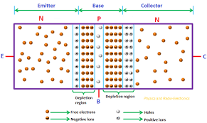

How to get started with Engineering | Electronics
Welcome back; here I will introduce you to the fundamentals and basics of Electronics for Engineering.
To follow along, please refer to the introductory lesson to find the link to an Arduino Kit, which will contain plenty of electronic components and a breadboard.
How Does a BreadBoard Work
A breadboard’s purpose is to help with efficiency when prototyping a circuit; instead of having to solder every component, without knowing the circuit will work, wouldn’t it be nice to have a “plug-n-play” set up where you can easily interchange components?
Well, the breadboard comes to the rescue!
Below is a diagram of how the various pins on your board are connected:

Usually, breadboards have two sets of horizontal strips that run across the long side, each usually labelled with a red or blue strip. These are generally used for power, providing current to your circuit; however, these are not directly connected to the pins on the inside. I will explain how this works further, with examples.

So, referring to both of the diagrams above, each pin along a column is connected. But pins across rows are not connected. Furthermore, pins that cross the barrier in the middle are also not connected.
This setup provides a framework which you can easily and systematically design your own circuits.
How Do Resistors Work
Resistor are an electronic component that, as the name implies, restricts and resists the flow of electrons in a circuit.
But how does this work?
Well, each conductive material has its own properties, which results in each material conducting electricity slightly differently. Thus, each material will also resist electricity differently. For example, copper is a very conductive material, which means it has a low resistance.
Below is a diagram showing the guts of a resistor: 
As you can see, there is some internal conductive material that is a mixture of various material with different properties. This will result in the final material to have a different resistance than the pins (connecting leads).
The coloring on the resistor also has a meaning. It is some sort of code for the resistance. However, these are often not standardized or hard to read and remember, so I usually don’t pay attention to them.
How Does a Transistor Work
If you search this up, probably the first “definition” you will come across is “ a transistor is an electronic switch”. However, I have never liked this definition, as I think not only is it basic but it’s lacking.
Below is a schematic diagram of a transistor: 
As you can see, there are three main pins (or leads): the collector, the base, and the emittor. Now, I could go into what each pin is, but to understand a transistor, we have to go down to the atomic level and understand what’s in a transistor first, then we can understand what the pins mean.
To understand this, I think it is best if we tackle what a Diode is and how it works first.
How Does a Diode Work
A diode is an electronic component that basically restricts the flow of electrons, but only in one direction. It only allows electricity to flow in one direction.
Below is a diagram of what the inside of a diode might look like, at an atomic level: 
To start, let me explain what you are looking at. Basically, there are two materials inside of a diode: a n-type material and a p-type material. But what does this mean?
Well first, these materials are made up of mostly silicon. Which is something called a Semi-conductor.
What Are Semiconductors?
You are probably similar to conductors and insulators. But what are semiconductors? Well, simply put, semiconductors are materials (specifically metals) that can have both conductive, and less conductive properties, depending on the environment. Factors that might influence this are
My Technical Report on Photoresistors
Below, I have linked a paper I had written in my sophomore year of high school to explain what photoresistors are and how they work.
Even though I talk about photoresistors in that paper, I still explain semi-conductive materials and how various other materials, like phosphorus, are added to the silicon to achieve certain properties (mainly how there will be extra electrons in one mixture and a depletion, or holes, in another mixture).
Refering back to this image of how the electrons will behave in a diode:
We can see that due to the material properties of the p-type, it will create various holes (a lack of electrons in an atoms outer electron shell) and due to the properties of the n-type, there will be an excess of electrons.
Now the key is notice what will happen (at an atomic scale) at the border/barrier between these two materials. Some of the free electrons nearest to the border will actually cross over to the p-type material. So, after this interaction, the p-type material right-most side will be slightly negatively charged, and the left-most side of the n-type material will be positively charged.
Now, you might think that this process will continue, but it actually will not. See this transfer of initial electrons will create a charge barrier. This barrier will stop the electrons from the n-type to cross further to the p-type. But why does this happen?
See, after the initial cross, like I said the right-most p-type side will be slightly negatively charged. So, when other electrons try to cross over to the p-type again, the negative charge created from the initial cross will repel further crosses.
So currently, with no further charges applied, this diode will be locked in this charge state and no further electrons will flow (at least across the border; there might be small flow from electrons within the n-type).
But let’s see what happens when we apply a charge, like from a battery, to the terminals of this diode (the positive side, p-type, is anode; negative side, n-type, is cathode).
In this first scenario, let’s say that the negative side of the battery was attached to the p-type side of the diode. So, electrons from the battery’s negative side will flow into the p-type side, filling in those holes, until electrons will reach the tiny negative barrier created from the initial electron exchange. This barrier acts like a wall, and inhibits electrons from flowing.
However, let’s try to attach the battery in the opposite direction, where the negative side is on the cathode of the diode. The electrons flowing from the battery will push electrons from the n-type material, over the barrier and electricity can flow. But this can only happen past some voltage threshold, which depends on the diode characteristics.
How Does a Transistor Work, revisited
So, since we now know how diodes work, let’s see how we can apply this to understand how transistors work. Basically, transistors are two diodes in parallel. Now, don’t just think you can put two diodes in series on a breadboard and think you have created a transistor (this is actually something I believed in middle school). Below I will explain how a NPN Transistor works, but the same principles can be applied to PNP Transistors.
So, the three pins on a transistor stand for the base (the p-type material), emitter (the n-type material), and the collector (n-type material).
Below is a diagram showing the electron arrangement of inside a transistor: 
As you can see, it is really just two diodes ‘smushed’ together. As you can see, the p-type - n-type arrangements both create their own barriers. With a depletion zone in the middle (just a depletion of electrons, or holes). The physics of this should be the same as the barrier formed in a diode.
Let’s observe what happens when I apply a charge from the collector and emitter sides (which are kind of like the inputs and outputs of the transistor, at least in the context of where the electrons want to flow from, from one n-type to another n-type).
The electrons will flow into the collector, pass (or break) the first barrier, but then be blocked by the barrier created by the second inter-junction (can you see why this happens? hint: analyze the charges that interact).
Now, let’s observe what will happen when I add a positive charge to the base: again, electrons will pass over the first barrier and now have somewhere to go, the positive base; they will flow out of the base and complete the circuit. But this positive charge will also weaken the second barrier to the point that electrons will now be able to flow from the collector to the emitter, thus completing the circuit.
So in this sense, a transistor is like a gate, it allows electrons to flow from one end to another only when a “key” (a positive charge on the base) is applied.
There is also PNP type transistors, which work very similarly, but instead of a positive charge on the base opening the gate, a negative charge will open the gate.
Ok, now that we have a basic understanding of semi-conductor materials, let’s learn about some other components.
How Does a LED Work
Simply put, this is stands for a Light Emitting Diode, and it does exactly as it sounds like: emits light by utilizing physical properties of certain materials.
Quick Review of what light is
Light is both a particle and a wave. But in this context light is just a photon being emitted from some energy source. Here, the photon is emitted when an electron drops in energy levels (from a higher orbital to a lower orbital).
So, an LED is just a diode with some modifications. The key is the specific material(s) that the diode n-type and p-type is made of. And so when an electricity flows through this material, it will cause electrons to change energy levels (which will emit light). And depending on the particular materials, the emitted light will be a different frequency (which will change the ‘color’ of the light).
Creating Basic Circuits
Now let’s circle back to using and applying what we learned about breadboards to create basic circuits. I will provide you with basic schematic reading skills and I will leave it up to you to build the circuit yourself.
Ok, below is a simple schematic that will show and apply basic components that we discussed earlier:

As you can see, it employs a transistor, resistors, diode, a button, and an LED (you can choose which ever color you’d like). Below is a list of corresponding symbols and their component:
Notes/References
- a few pages of notes from my old notebook related to How transistors work:


Subscribe to Burak Ayyorgun
Get the latest posts delivered right to your inbox